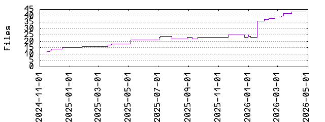

| Extension | Files (%) | Lines (%) | Lines/file |
|---|---|---|---|
| 3 (6.98%) | 184 (2.14%) | 61 | |
| cast | 1 (2.33%) | 179 (2.08%) | 179 |
| json | 2 (4.65%) | 80 (0.93%) | 40 |
| md | 2 (4.65%) | 123 (1.43%) | 61 |
| nix | 29 (67.44%) | 7965 (92.77%) | 274 |
| pf2 | 1 (2.33%) | 15882 (184.98%) | 15882 |
| png | 3 (6.98%) | 9540 (111.11%) | 3180 |
| toml | 1 (2.33%) | 53 (0.62%) | 53 |
| txt | 1 (2.33%) | 0 (0.00%) | 0 |